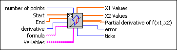
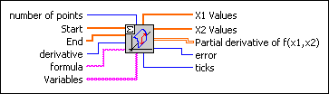

Partial Derivatives of f(x1,x2) VI
Owning Palette: Calculus VIs
Requires: Full Development System
Calculates a 2D array of the partial derivatives of a function of two independent variables.

 Add to the block diagram Add to the block diagram |
 Find on the palette Find on the palette |
Owning Palette: Calculus VIs
Requires: Full Development System
Calculates a 2D array of the partial derivatives of a function of two independent variables.

| Add to the block diagram |
Find on the palette |
 |
number of points describes the number of grid points for both variables. The default is 25. |
 |
Start specifies the start points of both variables, that is, an array of length 2. The default values are (0, 0). |
|
End specifies the end points of both variables, that is, an array of length 2. The default values are (1, 1). |
 |
derivative specifies which partial derivative is calculated. A value of 0 represents the partial derivative of the first variable. A value of 1 represents the partial derivative of the second variable. |
 |
formula is a string describing the function. The formula can contain any number of valid variables. |
 |
Variables is an array of two strings representing the two variables with respect to the naming conventions of the Formula Parsing VIs. The default variables are (x1, x2). |
 |
X1 Values is the resulting 1D array. |
|
X2 Values is the resulting 1D array. |
 |
Partial derivative of f(x1,x2) is the 2D array of the fixed partial derivative at the defined grid points. For a derivative of 0, the function df(x1, x2)/dx1 is calculated. For a derivative of 1 the function df(x1, x2)/dx2 is calculated. |
 |
error returns any error or warning from the VI. You can wire error to the Error Cluster From Error Code VI to convert the error code or warning into an error cluster. |
 |
ticks is the time effort for the whole calculation of the function values in milliseconds. |
The x1-derivative of the function
f(x1, x2) = sin(x12 – x2) – cos(sin(x2) – x1)
is investigated in the interval (–2, 2) by (–2, 2). The values are obtained by entering the following on the front panel: